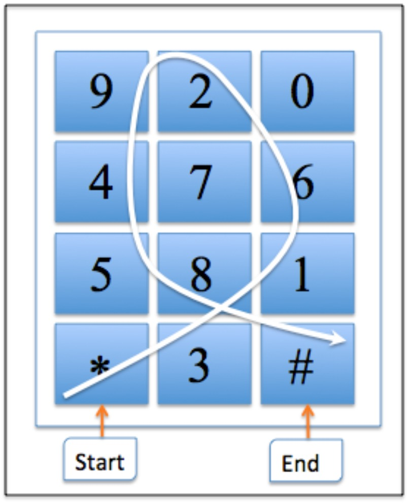

| Huiping
Sun
Network and Information
Security Laboratory
|
Huiping Sun is an assistant professor (Lecturer) at Peking University. His research explores identity management and trust management, with current focus on smartphone authentication, usable and secure passwords, and CAPTCHA. He is a member of CCF, IEEE and ACM.
TeachingBlockchain |
[2018.02] |
PassApp:
My App is My Password! |
|  |
SlidePIN:
Slide-Based PIN Entry Mechanism on a Smartphone |
Program Committee:
IEEE International Conference on Cyber, Physical and Social Computing (CPSCom: 2015, 2013)
The Workshop on RFID Security Asia (RFIDSecAsia: 2013, 2011)
IEEE International Conference on Computer and Information Technology (CIT: 2012)
IEEE International Conference on Internet of Things (iThings: 2011)
IEEE International Conference on e-Business Engineering (ICEBE: 2011,2010)
International Conference on Broadband and Wireless Computing, Communication and Applications (BWCCA: 2010)
The International Workshop on Managing Insider Security Threats (MIST: 2010)
The Workshop on Advances in RFID (AIR: 2009, 2008)
Reviewer:
IEEE Computer Magazine
IEEE Communication Magazine
IEEE Transactions on Dependable and Secure Computing
IEEE Transactions on Service Computing
ACM Transactions on Internet Technology
Wiley Security and Communication Network
Springer Peer-to-Peer Networking and Application
Oxford Computer Journal
IEICE Transactions on Fundamentals
IEICE Transactions on Information and Systems